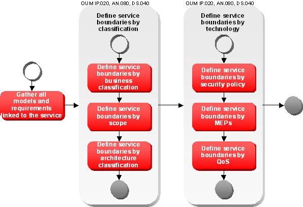
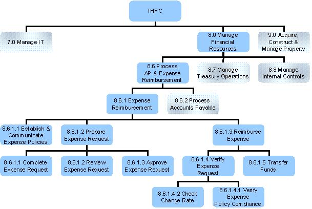
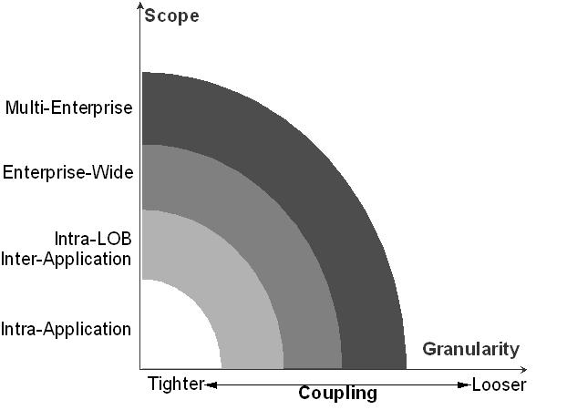

OUM |
Technique Overview |
||
Method Navigation |
Current Page Navigation |
||
|
|
||||||||
The purpose of this technique is to provide guidance about how to to define services to the right level of granularity using boundary analysis.
Service Boundary Analysis covers the set of activities required to identify the right level of granularity of a service candidate. Service Boundary Analysis is split in two. First, new service candidates are analyzed against business and architectural boundaries to decide upon the functional granularity for the services to be proposed. The candidate analysis results in a clear definition of the scope of functionality that needs to be covered by the service portfolio. Secondly, the service candidates that were justified for realization are further analyzed along technical boundaries to define the set of services to be created to realize the identified candidate. The outcome of Service Boundary Analysis is one or more service candidates proposed for realization.
Service Boundary Analysis - This technique is used to take the service candidates through a process to determine the functional granularity, the scope and functionality for the proposed services.
The results feed into the SOA Service Identification and Discovery and the Service Definition techniques.
No. |
Step | Component | Component Description |
|---|---|---|---|
1 |
Gather all models and requirements. | Requirements and Models | This component is a collection of requirements and models applicable to the service candidate. |
2 |
Define service boundaries by classification. | Boundary Analysis | The Boundary Analysis component contains the detailed service boundaries as a result of analyzing various influencing conditions against the service candidate. |
3 |
Define service boundaries by technology. | Boundary Analysis | The Boundary Analysis component is further refined by analyzing the technical conditions against the service candidates. |
A great challenge in SOA projects is the decision upon the granularity of a service. Often this decision is done via good feel, often resulting in far too granular service boundaries. The challenge is comparable with the challenge in process modeling, i.e., where does a process flow end, and a source code flow begin. In order to create services that serve business needs, the service boundaries should be aligned on predefined criteria to identify the right granularity for reuse. Standardization of service boundaries enables different projects to identify the same boundaries and therefore to discover possible reuse.
Typically, a service candidate results in a single contract being defined that leads to a single service being realized after service delivery has completed. However, a key component of service definition, determines if one or more service boundaries are necessary to make the best use of hardware resources and satisfy the intended consumers requiring the functions of the service candidate.
Therefore, during service analysis, a service candidate may be split into several new service candidates. This will again lead to the definition of multiple service contracts per original candidate, as there are additional factors to consider when determining service boundaries based on requirements. Influencing factors that affect service boundaries include:
It is important that service contracts be stated in business terms to allow reuse discovery as early in the project as possible; however, engineering disciplines are required to ensure that the function of the contract fits business needs and can be realized technically. A good analogy to think of here is with building architecture. The service boundary analysis represents the process of taking the building from concept to design, which includes the determination of the structurally significant aspects of the building. The same rigors have to be taken against the service candidate, which represents the concept, where various aspects are taken into consideration prior to commencing design.

Service identification and discovery has previously identified a set of service candidates. Boundary analysis is used to further refine the list of services required to deliver the requirements allocated to the new service candidate. Please have a look at the SOA Service Identification and Discovery technique for further details. As part of the boundary analysis process a set of models and requirements specifically related to the service candidate are further analyzed.
During this step, you identify service boundaries that arise from classifying the service against business categories, scope and logical architecture layers.
Service Portfolio Management uses enterprise specific taxonomies to classify services for alignment analysis. The service portfolio should be reviewed regularly to align the portfolio with the business and IT strategy. For that purpose, service candidates should be classified against the business category. This taxonomy is further introduced in the IT Asset Management technique.
The classification of a service against a business function depends on the classification of the requirements along the hierarchy of the Function Model.

If all requirements assigned to the candidate are classified against the same business function, then the service should be classified to it as well. But if the requirements are classified on different business functions, further analysis is needed to review the classification of the requirements. If all requirements belong to one hierarchical path, the service should be classified to the lowest level in the business functional hierarchy. If there are requirements in sibling business functions, this is a good indicator for a boundary identified. Define a separate service candidate for each parallel path in the functional hierarchy assigning the requirements accordingly. Carefully check the applicability of requirements on a higher hierarchy. On reviewing the requirements it might happen, that the classification of the requirements against the business function should be changed. As requirements can be shared by several projects and services, such a decision will need to be carefully analyzed.
Consider an activity called createBill to be proposed as new service candidate. Reviewing the requirements attached this activity would need to collect the positions for the bill from two different shops, e.g., books and music. But your Business Categories separate books and music in billing. If that separation was not there, the candidate would perfectly fit into one Business Category. But due to the separation (maybe of regulatory compliance reason) the candidate should be split into two candidates creating two different bills. This example very well demonstrates that a split may have great impact on the source model. The business requirement specified is to create one bill to the customer. Therefore a third new service candidate is needed to combine the business specific bills into one summary bill. The Business Category is a good indicator of a business process being needed further decomposing the functional work. If the activity was identified from a process model revisit the modeling step with the additional information available.
The intended breadth of the consumer audience for a service defines its scope. Possible values may vary between enterprises but typically values can be: Multi-enterprise, enterprise-wide, intra-LOB and intra-application. Please see the Service Architecture technique for details on service scope.

Review all the requirements of the service candidate regarding their classification against scope. If all requirements have the same scope, then the service has the same scope as well. If different scopes were assigned to the requirements, the requirements need to be further analyzed. The higher the scope typically the more generalized the requirement. Identify the requirement with the narrowest scope. If the other requirements can be realized within the same scope, then duplicate the requirements, change them to fit to the scope, and finally assign them to the service.
Analyze the original requirements in the scope of the project to verify if the changed service candidate still fits the project need. If not, a service boundary has been identified. In that case the requirements should be analyzed again to split them along the boundary and to split the service candidate accordingly. Check if the service candidate with the tighter scope can be shared with the candidate of higher scope. In that case the service with the higher scope might later be implemented by creating an access proxy on service infrastructure.
Consider if some requirements on createBookBill are specific for internet shops requesting the service in multi-enterprise scope that do not apply to the bills requested from the books shops in LOB scope. In that case separate out the requirements for multi-enterprise scope and consider suggesting a specific service candidate covering the multi-enterprise scope. This new service candidate might use the LOB candidate for the common functionality, but adds the multi-enterprise specifics.
Another enterprise specific taxonomy to classify services is the categorization against the architectural layer of an enterprise architecture. This taxonomy can be used to align the portfolio with a technology strategy, e.g., improve multi channel sales or invest into a business process layer.
The classification of a service against the reference architecture specifies a logical layer that the service belongs to. Each logical layer has its own design guidelines and technical platforms assigned. Review the Service Architecture technique to understand management of architectural policies that are applied to different logical layers. If all requirements can be fulfilled in the same layer, the service can be classified with an exact match. Otherwise check if the requirements of the service should be reduced to create an exact match or if the service candidate should be split across the layers. In both cases split the requirements accordingly. For all requirements no longer covered by the service candidate, check the impact on the project or business strategy to decide where the requirement should be covered instead.
Consider the new candidate createSummaryBill can be classified into the business activity layer. But for example if there is a requirement specifying, that the printing and posting is outsourced to an external company, another boundary is identified resulting in a new access service for printAndPost.
During this step, you identify service boundaries that arise from checking the service against technological influencers, i.e., security, message exchange patters (MEP) and quality of service (QoS).
Check all requirements to be covered by the service regarding security requirements. If there are any contradicting requirements, a service boundary is identified. If the security changes can be covered by the infrastructure, the same implementation may be shared later. But for each different security policy a different interface will be needed hence a need for creating a different service.
Consider that requirements for a content management repository have been put forward and justified as a service candidate. One requirement states that unsecured read-only access to the repository is acceptable. Another requirement states that publishing documents to the repository must go through an approval process, and be secured with authentication and authorization. In this scenario the decision to create separate Publish and Retrieval services would be recommended. The difference in security policies has identified that the primary consumers for each set of requirements is different, and having separate services defined will have advantages.
Variances in Message Exchange Patterns are another indicator of a potential service boundary. If certain requirements require a publish/subscribe pattern and others request response, there is a good chance that separate services should be defined along these lines. Reasons for identifying service boundaries by Message Exchange Patterns Include:
If a service boundary is identified on MEP level, check if the implementation can be shared just providing different interfaces for the separate services. This typically involves further analysis of Quality of Service expected by requirements.
QoS should also be examined when identifying service candidates as they represent significant differences in infrastructure requirements. When these conditions exist, analyze if the differences can be covered by just following the more strong QoS requirements. Analyze the impact of stronger QoS to possible consumers, if it will result in an overall improvement. It might be the case that the deployment environment needs to be scaled higher at additional costs saving duplication efforts. Sometimes defining separate services along QoS boundaries leads to greater flexibility, especially when managing scalability within the shared environments.
Consider the requirements for a forecast reporting engine have been put forward in a single service candidate. Part of the function of the forecast engine requires that a certain summary report to be generated. This report will be called upon once per week by a user community consisting of approximately 5 users, and will take several minutes to generate, which is within the expected range. Other reports will be accessed several thousand times per week, but a user community of approximately 500, and must be retrieved within 5 seconds. In order to avoid conflicts while the large report is being generated, separate services are defined to allow the deployment of the services on separate hardware.
Typically, service boundaries on QoS result in the same implementation being deployed to different environments with different setup. By that the implementation cannot be shared, but the code can be reused.
Note: Service boundary definition is not an exact science, and its primary goal is to draw the architect’s attention to potential areas where a service boundary may be needed. There will certainly be situations where there are differences in the criteria identified above but there is not enough benefit to justify the creation of a separate service.
There are no templates available to assist with this technique.
This technique is recommended for use in the following OUM tasks:
| Task | Usage |
|---|---|
| Use this technique to understand the standards and guidelines relative to SOA Service Boundary Analysis. | |
| Use this technique to understand the best practices around Service Boundary Analysis. | |
| Use this technique to understand how to define services to the right level of granularity. | |
| Use the classification part of this technique in the first step to define the major boundaries for strategic service candidates. | |
| Use this technique to understand how to define services to the right level of granularity. | |
| Use the classification part of this technique in the first step to define the major boundaries for new service candidates. | |
| Use this technique as part of the service definition to define the detailed boundaries of the services to be delivered by the project. |
Use the following criteria to check the quality of this technique:
Are the boundaries that have been identified analyzed by a pre-determine classification and scope, for consistency?
When a boundary analysis results in that a service candidate should be split into several candidates, is the impact on requirements and models properly checked, and updated when required?
Is the contract for the service registered in an enterprise repository?
Are service contract templates used for service contract definition?

Copyright © 2006, 2016, Oracle and/or its affiliates. All rights reserved.